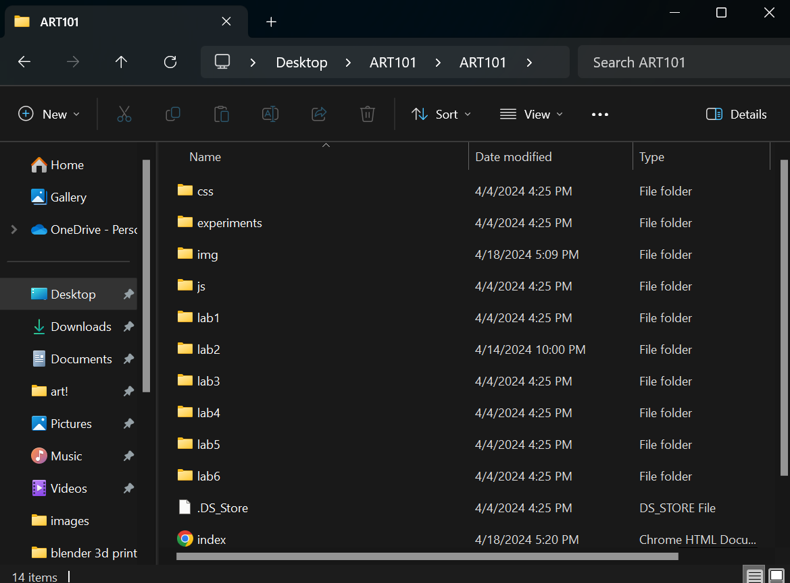

Lab 3 - File Structure
Challenge
The challenge of this lab was to create links to other files in our tree by correctly pathing them. We created a local file structure and edited the index files already available in the ART101 folder.
Problems
Because the lecture had discussed parent and child files along with pathing demonstrations, all my previous issues I had regarding that topic have been resolved. I feel like I understand Java and CSS more now.
Reflection
This was a relatively easy and straight forward assignment for my partner and I.
Results
Take a look at my file structure down below.
